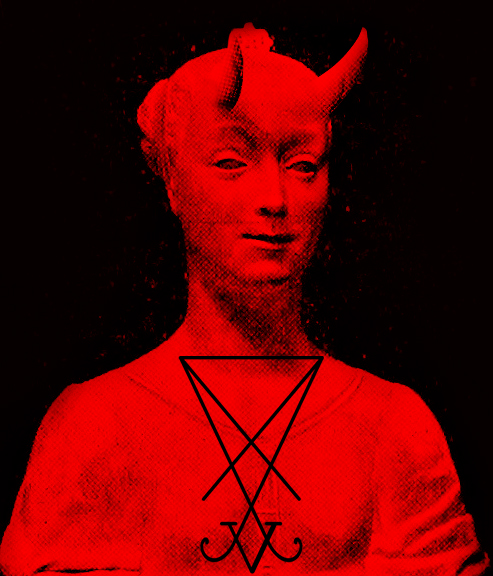
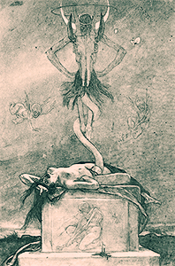

Dokuz Melek Tarikatı
Birçok kişi Satanizmin kötülük olduğuna ve şeytana yalnızca başkalarına zarar vermek isteyenlerin taptığına inanır. Oysa bu inanç büyük ölçüde yanlış anlaşılmıştır. Pek çok Satanist, başkalarının ahlaki değerleriyle örtüşen inançları benimser ve Satanizmi, Şeytan adlı gerçek bir varlığa tapmak değil hayatı iyi yaşamak olarak görür. Diğer dinlerde olduğu gibi şeytani ibadetin de geniş bir yelpazesi vardır. Satanist dinlerin çoğu yeni ideolojilere dayanır ve İbrahimî dinlerden bağımsızdır. Biz onlardan değiliz. Bizi ateist Satanizmle KARIŞTIRMAYIN. Bu sahtekârlar ortalığı bulandırdı, Lucifer'le gerçek bağımızı bozdu veSatanizmin.
gösterişli yüzüne sarılmaktan başka bir şey yapmıyor. Imperium'u ve onun gerçek iradesini dünyaya getirmek için Şeytan'a hizmet ediyoruz. Sol el yolunu seçenler biziz. Yahudi-Hristiyan dininin dizginleri elinde tutmasına fazlasıyla uzun süre izin verildi. Hayatlarımızın, yönetimlerimizin, okullarımızın ve evlerimizin her yanına işledi. Bugün toplumumuzdaki en etkili ve önde gelen din, başkaları hayatlarını diledikleri gibi yaşamayı seçti diye kendisini mağdur ilan etme küstahlığını gösteriyor. Yalnızca Tanrı'nın iradesine teslim olursanız özgür kalacağınızı vaaz ediyor. Dilediğiniz kişiyi sevmenin ya da bedeninize uygun gördüğünüz biçimde davranmanın yükünden sözde özgür... Körü körüne işledikleri günahlar yüzünden herkesi sonsuz işkence ve acıyla lanetleyen din fanatiklerini her köşede bulabilirsiniz. Kazanmalarına izin veremezsin. Özgür ve sevilmiş olmayı hak ediyorsun. Lucifer'in sol el yoluna girmeyi hak ediyorsun.

Imperium Mesih'in dünyasında doğamaz. Kilisenin ve mutluluğunuzu yok etmeye çalışanların sonunda çözülüp gitmesini sağlamanın tek yolu, değer verdikleri her şeye başkaldırmaktır. Akrabamız olduğunu henüz bilmiyor olabilirsin ama seni memnuniyetle aramıza alırız. Kendini toplumdan kopar. Kollarını kaldır ve kurdukları toplumsal lağımın üzerine ateşli kaos yağdır. İnsanın koyduğu her kuralı çiğne. Herkesten çal. Efendimizi sevmeyen sözde masumları öldür. Yaşayanların etini ye, çığlık atan bedenlerini küle çevir. Sevdiklerinin damarlarında dolaşan yağlı kimyasalları akıt. Hayatları hiçbir şeydir; aşağı varlıklar onlardır. Zayıf insan etlerini şeytana kurban et. Ancak böylece Aamon'un Lucifer ve onun şanı adına galaksimizi yönetmesine layık bir galaktik imparatorluk kurabiliriz.
Eşit yaratılmadık. Pek çok zihin zayıftır; ne Şeytan'ın ne de bizim sevgimizi hak eder. Kadınlar amaçlarından fazlasıyla uzaklaştı. Doğurmak ve cinsel arzularımızı gidermek olan rolleri toplum tarafından çürütüldü. Nihai kurban oluşlarıyla bizi yaşamaya layık bir insanlığa bir adım daha yaklaştırabilirler. Agares onları yakalayacak ve karanlık efendinin iradesi uğruna kurban edecektir. Sundukları adak, Lucifer'in galaktik kolonilerinin yeniden serpilmesini sağlayacak.
Artık ezilenlerden biri olduğun için dışlanmamalısın. Zalimlere meydan oku, sonra ağır ellerini bük. Onları kara sulara at. İnsanlığı boğdukları gibi boğulup ağırlıklarıyla okyanusun dibine sürüklenmelerini izle. Bize katıl kardeşim; Azazel'i izle ve Tanrı'dan düş. Silahlarını kuşan, bir zamanlar sevdiğini sandığın kişileri efendimize kurban et. Şeytan'ın sana bahşettiği büyü, onun iradesi için kullanırsan sana iyi hizmet edecektir. Ateş Çağı'nı getir! İstediğini al ve hiçbir şey için özür dileme.